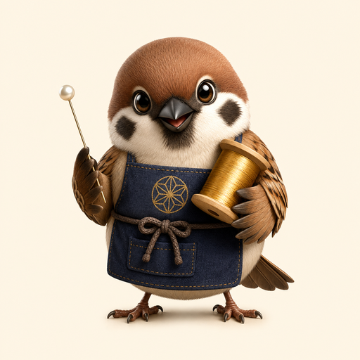

0Score
0Best
♥ ♥ ♥Thread
0%Tangle
x1Combo
0:00Time
Commission
First Star Wrap
3 broad wraps · Indigo + gold silk · 1 pearl intersection · Tangle under 55%
North Star · pin 1/12 · Indigo silk

Choose a start pin on the glowing guide ring.